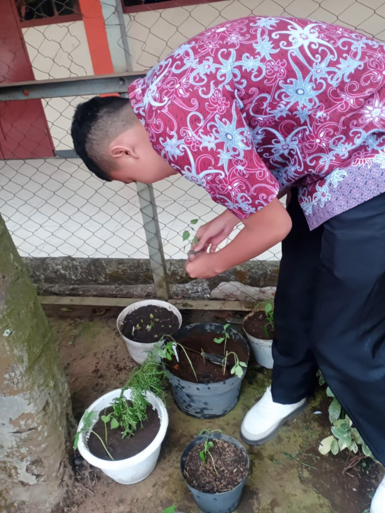

02
Hikmal Dithia S
Nomor absen 02
Mewujudkan lingkungan yang lebih hijau melalui kegiatan menanam, merawat, dan menjaga tanaman bersama.
Lihat DokumentasiBelajar peduli lingkungan melalui tindakan sederhana.
Green Corner merupakan kegiatan kelompok untuk menanam dan merawat tanaman di lingkungan sekolah. Melalui kegiatan ini, kami belajar bekerja sama, bertanggung jawab, dan menjaga lingkungan agar tetap bersih serta asri.
Setiap anggota ikut berpartisipasi dalam menyiapkan media tanam, memindahkan bibit ke pot, dan merawat tanaman.
Enam anggota yang bekerja sama dalam kegiatan Green Corner.
Nomor absen 02
Nomor absen 09
Nomor absen 10
Nomor absen 12
Nomor absen 18
Nomor absen 22
Tanaman yang menjadi bagian dari kegiatan kelompok.
Tanaman cabai ditanam dalam media tanam yang cukup gembur dan dirawat dengan penyiraman teratur.
Tanaman tomat membutuhkan sinar matahari dan perawatan rutin agar dapat tumbuh dengan baik.
Bawang putih menjadi salah satu tanaman yang dikenalkan dalam kegiatan penanaman dan perawatan.
Beberapa momen saat kelompok menyiapkan media tanam dan menanam bibit.



Melalui kegiatan Green Corner, kami belajar bahwa menjaga lingkungan dapat dimulai dari hal kecil. Dengan kerja sama dan tanggung jawab, kami berharap tanaman yang telah ditanam dapat tumbuh dengan baik dan membuat lingkungan sekolah menjadi lebih hijau, bersih, serta nyaman.
Kelompok 6 · X-TE2 · SMKN 2 Purwokerto